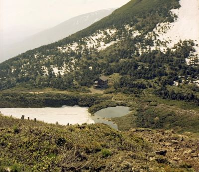

About Me

Hi, I’m Kenny Frye, a photographer passionate about capturing landscapes, travel experiences, and everyday moments that tell a story.
My work focuses on travel photography, nature, and city architecture. I enjoy finding unique perspectives that make ordinary scenes memorable.
Photography allows me to preserve experiences and share the beauty I see in the world.